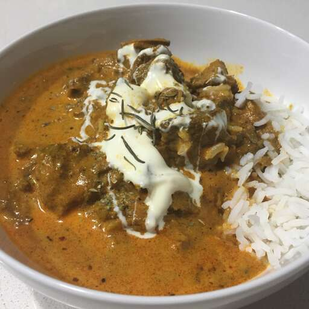

Go back
Butter Lamb Gravy

Description
Lamb is simmered in a spicy tomato and cream sauce. This is a very
mouthwatering dish that is easy to make. Serve with hot cooked rice or
your favorite bread. You can even make a variation with chicken, salmon or
beef.
Ingredients
- 2 pounds boneless lamb shoulder, cut into 1 inch pieces
- ½ teaspoon garam masala
- salt to taste
- 2 tablespoons butter, divided
- 1 onion, chopped
- ½ teaspoon ground turmeric (Optional)
- ½ teaspoon minced ginger
- ½ teaspoon minced garlic
- ½ teaspoon cayenne pepper, or to taste
- 1 tablespoon tomato paste
- 1 cup water
- ½ cup heavy cream
- 1 tablespoon honey
- 1 cup chopped fresh cilantro
Steps
-
Season the lamb with garam masala and salt. Heat 1 tablespoon of butter
in a large skillet over medium heat. Fry the lamb cubes until browned,
stirring constantly. Remove from the skillet and set aside.
-
Melt the remaining butter in the same skillet over medium heat. Add the
onion; cook and stir until the onion has softened and turned
translucent, about 5 minutes.
-
Stir in the turmeric, ginger, and garlic. Cook and stir for 1 minute.
Stir in the cayenne and tomato paste until well blended, then stir in
the water. Bring to a simmer and return lamb to the skillet. Simmer over
low heat for about 20 minutes, or until lamb is tender.
-
Stir in the cream and honey. Transfer to a serving dish and garnish with
cilantro.